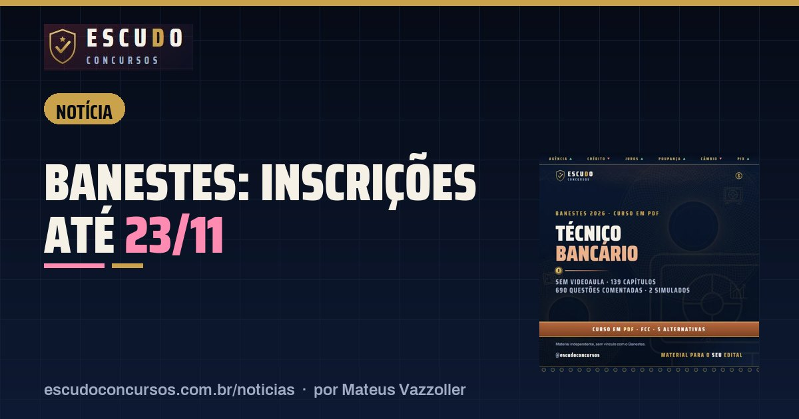

Banestes Técnico Bancário: inscrições terminam segunda-feira, 23/11, às 23h59, e o boleto vence na terça, 24/11
NotíciaPublicado em 21 de novembro de 2026 · por Mateus Vazzoller, ESCUDO Concursos

Quem quer o crachá de Técnico Bancário do Banestes, atendendo clientes e oferecendo os produtos do banco dos capixabas, tem até segunda-feira, 23/11/2026, às 23h59 (horário de Brasília) para se inscrever no site da Fundação Carlos Chagas. A taxa é de R$ 67,00, o boleto pode ser gerado até as 22h de terça-feira, 24/11/2026, e o pagamento precisa sair nesse mesmo dia, dentro do horário bancário. Na página do concurso na FCC, conferida na manhã deste sábado, não há aviso de nova prorrogação.
| Órgão | Banco do Estado do Espírito Santo (Banestes), Técnico Bancário |
|---|---|
| Banca | Fundação Carlos Chagas (FCC) |
| Vagas | 866 postos de cadastro de reserva em 34 polos |
| Remuneração | R$ 4.552,43 por 30 horas semanais |
| Inscrições | até 23/11/2026, às 23h59 de Brasília |
| Taxa | R$ 67,00, boleto gerado até as 22h e pago até 24/11/2026 |
O que vence na segunda, 23/11, e na terça, 24/11?
O fim das inscrições também encerra o prazo de todos os documentos que vão pelo link de inscrição. O calendário dos dois dias, pelo edital consolidado da FCC:
| O que fazer | Prazo |
|---|---|
| Preencher o formulário e enviar a foto | 23/11/2026, até as 23h59 |
| Laudo médico, para concorrer como pessoa com deficiência | 23/11/2026 |
| Documentos de quem concorre às vagas de indígenas | 23/11/2026 |
| Documentos de renda e de escola pública, para as vagas de hipossuficientes | 23/11/2026 |
| Pedido de atendimento específico no dia da prova, com atestado | 23/11/2026 |
| Gerar o boleto no site da FCC | 24/11/2026, até as 22h |
| Pagar o boleto | 24/11/2026, no horário do banco |
Uma regra do item 4.4.5.1 pega quem deixa para a última hora: pagamento feito pelo aplicativo ou no caixa eletrônico depois do horário limite do banco entra como movimento do dia útil seguinte e a inscrição não é aceita. Boleto gerado fora do site da FCC também não vale.
Qual polo escolher?
Cada candidato concorre em um único cargo e polo de classificação. Quem se inscreve mais de uma vez fica só com a última inscrição paga, e o item 10.7 proíbe trocar o polo ou a cidade de prova depois. Por isso vale escolher com calma antes de gerar o boleto.
O polo de Vitória (TB04) concentra 400 dos 866 postos. Os outros vão de 6 a 41 postos, espalhados pelo interior do Espírito Santo, e incluem São Paulo (capital) e São José do Rio Preto. A tabela completa, polo a polo, está no guia do concurso Banestes.
No mesmo formulário o candidato escolhe a cidade onde quer fazer a prova: Vitória, São Mateus ou Cachoeiro de Itapemirim.
Ainda dá para pedir as vagas de hipossuficientes?
Sim, até 23/11/2026. A reserva vale para quem tem renda familiar baixa e cursou o ensino médio em escola pública ou como bolsista integral em escola particular. Quem já está inscrito pode entrar na área do candidato e mudar a opção para concorrer a essas vagas, sem pagar outra taxa (item 4.3.3). Os comprovantes de renda e a declaração da escola vão pelo próprio link de inscrição, em arquivo de até 10 MB cada.
O que vem depois da inscrição?
| Etapa | Data |
|---|---|
| Lista das vagas reservadas e condições especiais deferidas | 07/12/2026 |
| Edital de convocação para a prova, com o local | 06/01/2027 |
| Prova objetiva, de manhã | 24/01/2027 (domingo) |
| Gabarito e questões no site da FCC, a partir das 17h | 25/01/2027 |
A partir de 26/10/2026 o próprio site da FCC mostra se os dados da inscrição chegaram e se o pagamento foi registrado. Vale conferir uns dias depois de pagar. Para saber o que estudar na maior disciplina da prova, veja o post o que estudar em Conhecimentos Bancários.
Curso ESCUDO Técnico Bancário do Banestes em PDF: 139 capítulos e 690 questões comentadas, 2 simulados no formato da prova, de acordo com o edital. De R$ 47 por R$ 37 com o cupom BANESTES37 até 23/11/2026.
Ver o curso
Perguntas frequentes
Até quando vão as inscrições do concurso Banestes?
Até 23/11/2026, às 23h59 no horário de Brasília, só pela internet, no site da Fundação Carlos Chagas.
Até quando posso pagar o boleto do Banestes?
O boleto de R$ 67,00 pode ser gerado até as 22h de 24/11/2026 e precisa ser pago nesse dia, dentro do horário do banco. Pagamento depois do horário limite não é aceito.
Posso trocar o polo depois de me inscrever?
Não. Cada candidato concorre a um único polo, só a última inscrição paga vale, e o edital proíbe a troca de polo ou de cidade de prova depois.
Leia também
- NotíciaPolicial Penal PE: pedido de isenção da taxa termina domingo, 22/11, às 18h
20 de novembro de 2026 · Quem quer ser Policial Penal de Pernambuco sem pagar os R$ 250,00 da taxa tem até domingo, 22/11, às 18h de Brasília, para pedir isenção no Cebraspe.
- O que estudarBanestes Técnico Bancário: o que estudar em Conhecimentos Bancários, bloco a bloco, para a prova da FCC
16 de novembro de 2026 · Conhecimentos Bancários do Banestes: os temas do Anexo IV em 6 blocos, a parte de seguros que muita gente pula e o peso das 15 questões na nota da FCC.
- NotíciaGM São Gonçalo: inscrições terminam quarta-feira, 18/11, e o boleto vence no dia seguinte
13 de novembro de 2026 · Concurso Guarda Municipal de São Gonçalo/RJ: inscrições no SELECON terminam em 18/11/2026, boleto de R$ 95,18 até 19/11. 100 vagas e prova em 24/01/2027.
Guia completo do concurso: edital, vagas e o que cai · Mais notícias e dicas de concursos